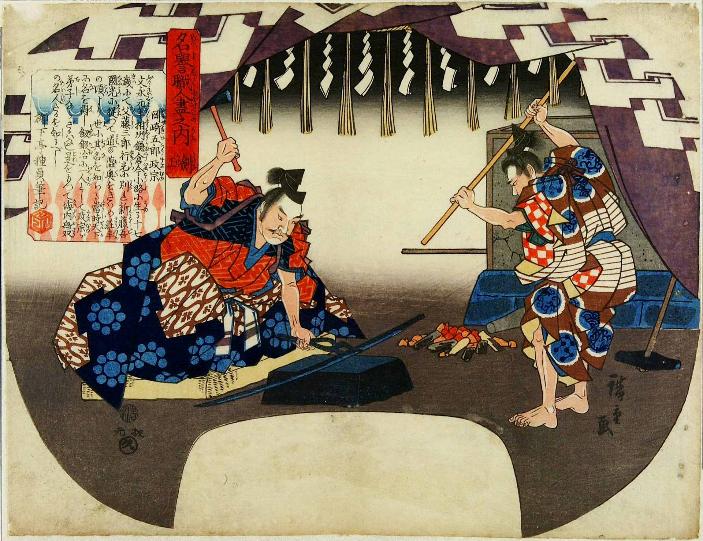
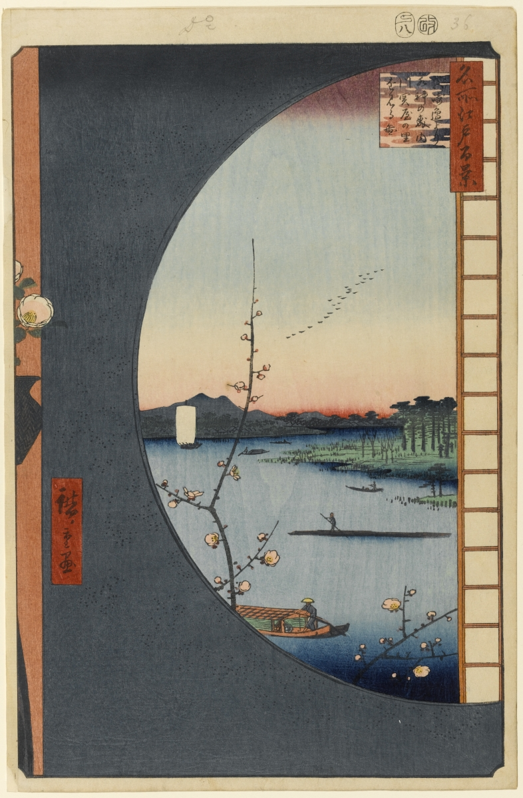
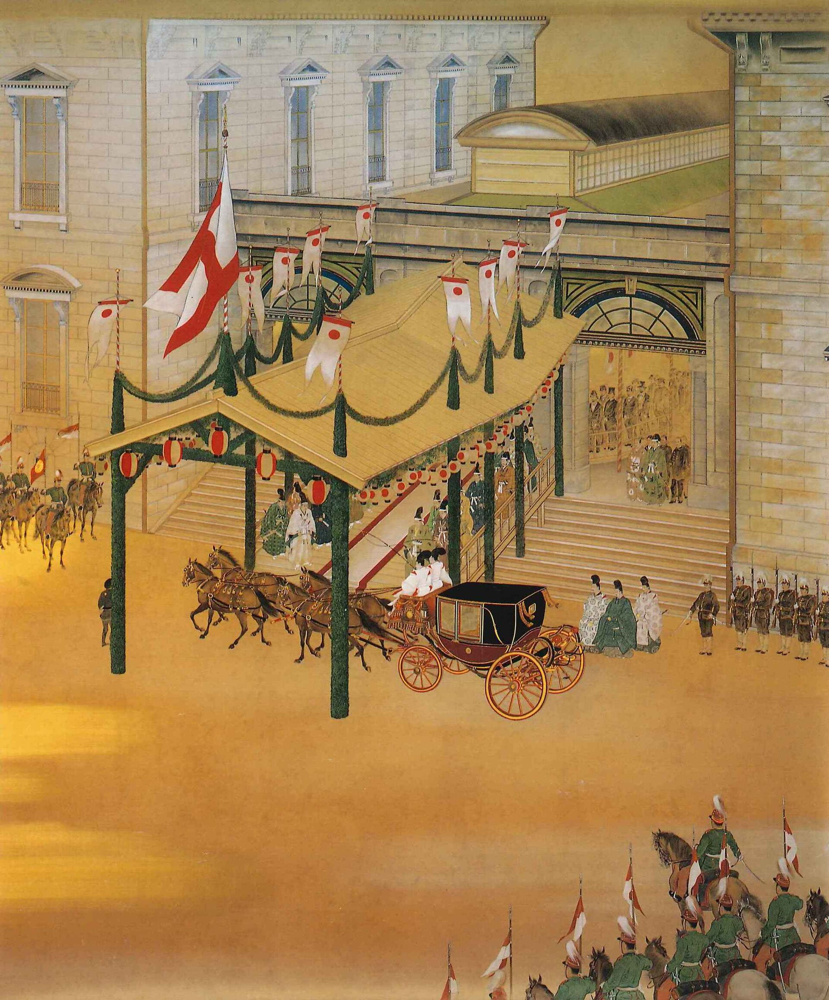
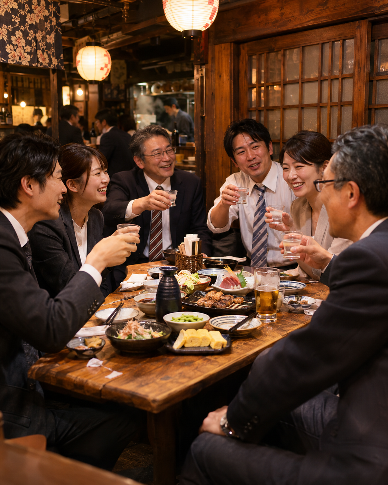
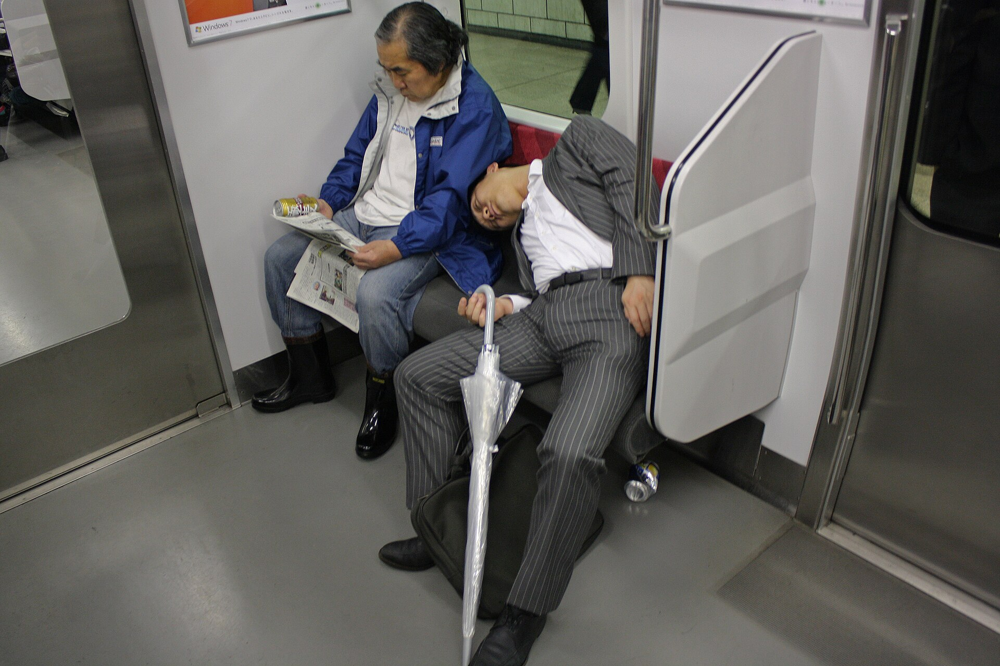
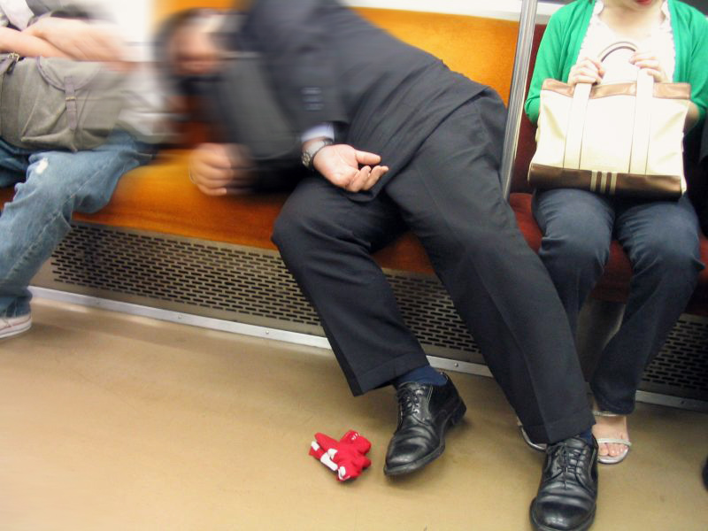

Dever, hierarquia e lealdade organizavam a sociedade.
Liderança · cultura organizacional
O país · localização
Um arquipélago no oceano Pacífico, próximo à China, às Coreias e à Rússia.


História · quatro viradas

Dever, hierarquia e lealdade organizavam a sociedade.

Estabilidade e contato exterior limitado fortaleceram costumes próprios.

Abertura, educação, ferrovias e indústria aceleraram a modernização.
Qualidade e exportações impulsionaram o milagre econômico.
A cultura atual não “veio dos samurais”: combina valores históricos, modernização industrial e reconstrução coletiva.
A história no cotidiano
Comunicação mais indireta para evitar constrangimentos.
Filas, silêncio e cuidado para não incomodar outras pessoas.
Pontualidade, reverência, formalidade e respeito à hierarquia.
Não são regras para todos, mas mostram uma convivência que tende a priorizar o grupo.
Cultura de trabalho
Forte identificação do profissional com a empresa.
Sair antes do chefe ou discordar diretamente pode gerar desconforto.
Termo associado a mortes causadas pelo excesso de trabalho.
“Salas de expulsão” denunciadas como pressão para o empregado pedir demissão.
Gestão japonesa
A decisão é discutida informalmente antes da aprovação. Pode demorar, mas reduz conflitos na execução.
Pequenos ajustes contínuos elevam qualidade, eficiência e controle dos processos.
Contraste cultural
Adaptação da gestão
Empresa de destaque · fundada em 1946
Masaru Ibuka e Akio Morita transformaram uma pequena empresa do pós-guerra em um grupo global de tecnologia e entretenimento.
Sony no Brasil
Chegada ao Brasil e, depois, produção de eletrônicos em Manaus.
Fim da fabricação local e do antigo modelo de venda direta de eletrônicos.
Produtos por distribuidores; PlayStation, música, cinema e soluções profissionais seguem ativos.
Liderança notável
Um líder japonês que pensava além do Japão.
Criou uma marca pronunciável no mundo e levou a Sony à Bolsa de Nova York.
Defendeu o Walkman mesmo diante da resistência interna.
Observava hábitos para criar mercados, não apenas produtos.
Conversa com o padrão japonês: qualidade e longo prazo. Rompe com ele: decisão mais ousada, exposição global e disposição para contrariar o consenso.
Uma noite na vida corporativa
O compromisso com a empresa pode continuar depois do horário formal.
Confraternizações com colegas e superiores fortalecem vínculos — e também podem carregar pressão social.
Não é uma obrigação formal nem a rotina de todos; é uma prática conhecida da vida corporativa japonesa.

Quando o último trem já partiu

Dormir onde for possível
Exaustão à vista de todosO fato curioso: quem perde o último trem pode esperar a manhã em karaokês, bares, hotéis-cápsula ou espaços públicos — e então seguir direto para o trabalho.
As fotos são registros reais de pessoas dormindo no transporte de Tóquio. O exemplo não representa todos os trabalhadores, mas expõe como jornada, pressão social e mobilidade podem atravessar a vida pessoal.
Conclusão
O Japão mostra como história, cultura e gestão podem gerar reconstrução, qualidade e inovação — mas também pressão e excesso.